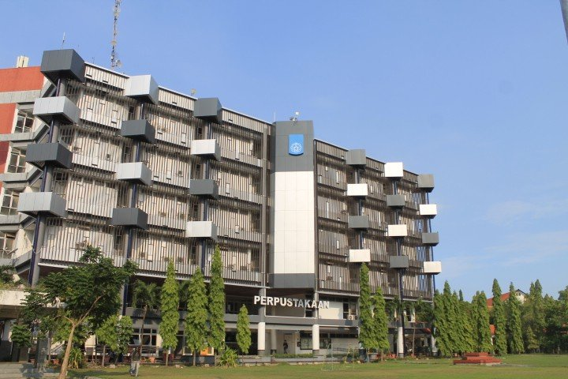

Koleksi Lengkap
Referensi buku, jurnal, dan e-book untuk menunjang belajar.
Akses ribuan koleksi buku, jurnal, e-book, dan sumber referensi untuk mendukung proses belajar, penelitian, dan pengembangan diri.
Referensi buku, jurnal, dan e-book untuk menunjang belajar.
Layanan untuk mahasiswa, dosen, dan tenaga kependidikan.
Akses katalog online dan sumber referensi digital.
Tempat belajar mandiri dan diskusi yang kondusif.

Perpustakaan mendukung kegiatan akademik melalui akses informasi, koleksi referensi, ruang belajar, dan layanan pendampingan informasi.
LibraryReg membantu calon anggota mengenal layanan perpustakaan dan mengajukan pendaftaran secara online dengan alur yang mudah.
Informasi resmi Perpustakaan ITS ↗__
Pilih layanan yang mendukung kegiatan belajar dan penelitianmu.
Telusuri informasi koleksi dan pelajari prosedur peminjaman maupun pengembalian buku.
Pelajari layanan ↗Temukan sumber elektronik untuk mendukung tugas kuliah, riset, dan penulisan ilmiah.
Jelajahi sumber digital ↗Dapatkan arahan untuk menelusuri referensi dan menemukan sumber informasi yang relevan.
Lihat informasi ↗Manfaatkan lingkungan belajar untuk membaca, mengerjakan tugas, dan berdiskusi.
Lihat fasilitas ↗Bangun keterampilan mencari, mengevaluasi, dan menggunakan informasi secara tepat.
Pelajari lebih lanjut ↗Daftarkan dirimu melalui formulir online untuk memulai proses pendaftaran anggota.
Daftar Sekarang →